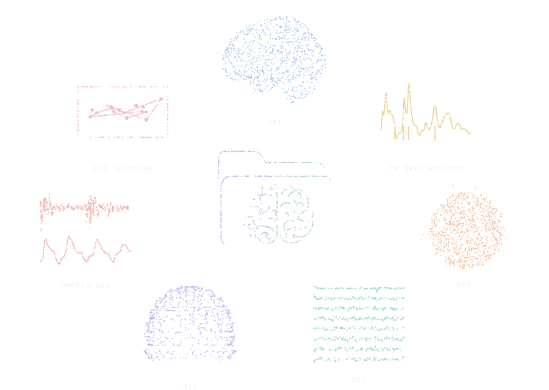

BIDS Manager
Documentation
From raw recordings to a
curated
BIDS dataset
Scan, curate, convert, check and edit neuroimaging data on Windows, macOS and Linux.
ancplaboldenburg.github.io/bids_manager_documentation